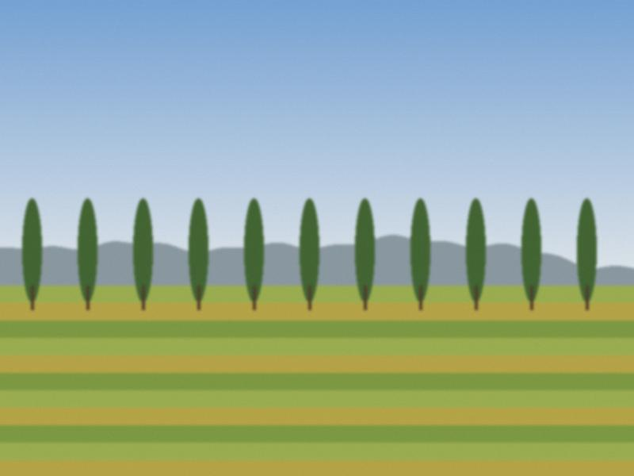
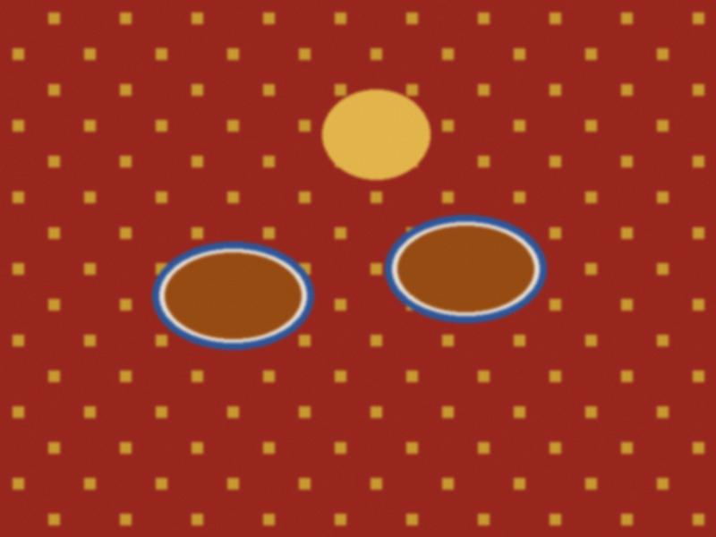
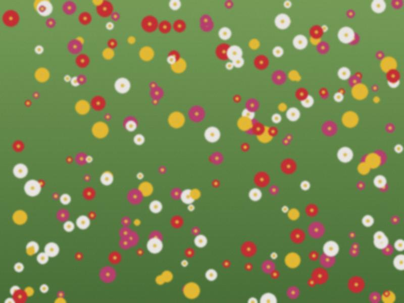

Archive for the ‘toi’ Category
Saturday, the last toi of the season. And the day of the Kara-Ak derby, at 6 p.m. The groom is a Neftchi man and the bride is for Tulpar, and they got married on this date on purpose "to find out who will win in the family".
So at 20.15 I stopped the programme and told 300 people: "There is a television in the corner. You have exactly ninety minutes of a football match. After that, a toi." The hall went quiet like in church. The old women looked at the screen too, to be polite. The groom's father held the bride's father's arm. I will not tell you the result. It is not my blog.
Then they danced until two.
Ordo, 400 guests, the big chandelier, no rules, no masks, nobody in a corner. After two years of silence I came out at 6 and the hall roared before I opened my mouth. I forgot my joke. I said "welcome home" and the bride's grandmother stood up and cried and everyone stood.
Prices are up, of course. A toi for 400 is now 6,500 dollars and the hall wants half in advance. Nobody complained. Nobody wanted to go home.
No hall, no band, no horse. A yard, a rented tent, a table made of two doors, 15 guests, masks in the pockets. The bride's father roasted a sheep in a pit, the groom's mother brought bread, and they asked me to be "a normal host, with a microphone". I used the microphone, with no speaker, in a courtyard where my voice came back from the wall.
It was the most beautiful toi I did this year. I did four this year.

The tent in the yard, with the apricot tree behind. Two doors for a table.The groom's car broke down on the bridge. The bride arrived at the hall on the horse with the groom's kin and no groom. Four hundred people looked at the door. I did nine minutes of programme without a groom, which I think is a world record, and a game called "who knows him best". Nine people answered wrong.
He arrived on the back of a motorcycle in a wrinkled white shirt, and the hall roared as if he had come on a lion. It was the best entrance of the season. I will never advise it.
The hall gave us the same floor on the same day: a toi at 6, a funeral lunch (as, the memorial meal) for an old man at 1 p.m. The chairs were still warm. The family of the old man left a candle on the head table, and the groom's mother saw it and said "leave it", and it stayed through the whole toi.
I started the toast to the dead with that candle. It was the quietest minute of my year. Then the DJ turned the music on and the bride danced with the grandfather of the groom, and he was crying and laughing and 82.
 The candle on the head table. Nobody moved it.
The candle on the head table. Nobody moved it.The sözchü leads the toasts. There is an order: God and the White Rider, the land, the dead (the first drops on the ground), Janyl and the saints, the parents, the guests, the children, the road last. My job is to keep the room awake in between.
Last night the sözchü, an old uncle of the groom, did parents first and God last, then looked up and said: "Oh, I have mixed it. Then let us do it again from the beginning." We drank twice to God and the White Rider. The hall was in love with him. It is the only way to break the order and not be a bad man: say it out loud.
In October the halls are booked a year ahead. The best ones, like Ordo (400 places, chandeliers from Urumqi, everybody says), you book in November for next October. This weekend: Friday evening, Saturday afternoon, Saturday evening. 11 hours of voice.
My voice is made of two things: tea with honey, and fear.

Tea with honey, between the second and the third.Yesterday I hosted the wedding of Bekzhan, who writes the other blog on this blogroll. Do you remember, last October he wrote in the comments that he would elope and buy a flat? He did not elope. He met his bride because her ATM was broken, and he came to fix it, and he fixed it for a year.
Altyn Ordo toikana, 300 guests. I promised him a free second wedding, so I took the fee for the first one, and he paid in a very serious way, with a computer cable as a gift for me. The bride, Aizhan, has a laugh that I put on the recording to cheer up the DJ. His mother was very tired and very happy, and she did not eat, and I sent a plate to her seat with a boy.
 The bread at the head table. They broke it together, and he checked the time on his phone.
The bread at the head table. They broke it together, and he checked the time on his phone.The sky went black at 5, the heavens opened at 5.40, the garden of the hall was a river. The bride arrived in rubber boots, which the groom's sister had brought "in case". The photographer asked her to take them off. She said no. In all photos she wears white lace and green boots.
We moved everything into the hall in 12 minutes. 250 people carrying chairs and plates with a song. The best entrance of my career: nobody planned it.

The bride's boots by the door. Green. Laced.The bride comes on a white horse, led by the groom's kin. This is how it is done, and it is beautiful, and it is also a risk. The horse was a calm old mare called Ak-Bulut, a cloud. Calm until the DJ pushed the button for the entrance music: 400 watts, a bang, a mare who had never in her life heard "Eye of the Tiger".
The groom's cousin held her. The bride stayed on and laughed so much that the photographer almost fell. From now on I check the horse before I check the speaker.
 Ak-Bulut after the entrance. She is already forgiven.
Ak-Bulut after the entrance. She is already forgiven.My favourite toi of the year, maybe of the three years. Last night, Saturday, the toikana by the river. 400 people, one bride who did not eat for two days and one groom who ate for both.
 The bride's table. Her friends did the flowers themselves, the night before.
The bride's table. Her friends did the flowers themselves, the night before.Meerim is a student of philology and loves a band called tüntolk, so I asked the DJ for the one song I did not want to play. She screamed. Her friends screamed. Four hundred people who did not know the song sang "kes, kes" anyway, because three girls at the front were so loud. Her father cried. Her brother came from Almaty with a suit that was too big and gave the toast for the parents. The bride's mother had been crying since Sunday, when the groom's family came with the kuda, and she did not stop until midnight.
I do not post names. The bride said yes in her comments. Congratulations, Meerim.
Morning crowning at St. Yuhanna at 11, so I was a guest (sitting, quiet, for once). Evening toi at 6 in a hall for 300. In between: lunch with the bride's father, who is a very serious man and said four words. The words were "you will not embarrass us".
I did not embarrass them. I embarrassed only myself in the second game, with the balloons.